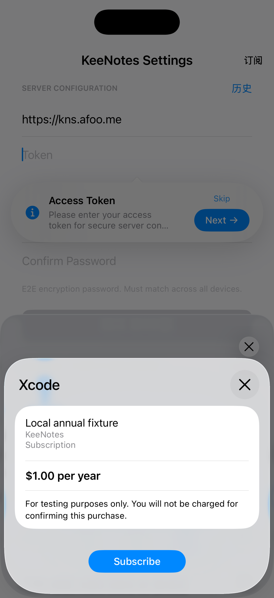

1 / 7
横向滚动浏览 · 点击箭头跳转 · 点击截图放大主线取消 / 迟到结果
系统语言验证
语言跟随系统语言，不根据地区推断。以下为同一台 iPhone 17 / iOS 26.5 的真实补跑截图；英文配中国地区、简体中文配美国地区。点击图片查看原图。
English · 中国地区
简体中文 · 美国地区
1.9.0（3）业务/UI 首轮 33 通过、2 失败；失败仅为这两项语言测试的键盘遮挡与滚动定位。修正测试交互后补跑 2/2 通过，35 个不同用例均已取得通过结果。原失败证据保留。页面截图只取对应测试最新的通过记录，语言截图与主线不是同一次购买。
来源：逐图来源与 SHA-256 · 两轮原始结果摘要 · 截图连线总览
系统购买弹窗验证
这是独立的 SystemAppleStore 本地测试，与上方 fixture 主线不是同一场购买，也不是 Apple Sandbox。系统界面明确提示 For testing purposes only、You will not be charged；交易环境为 Environment: Xcode。

测试价 $1.00/年，不会扣费。此图仅展示本地购买界面，不证明凭据已交付。
确认测试订阅
本地测试 1 / 1 通过
- 收到
verified交易，environment = Xcode。 transactionId = originalTransactionId = 2。- 交付前，
unfinished包含该交易。 - 本地凭据写入后
finish1 次；随后unfinished为空。
结果来自独立测试及诊断记录，交付使用本地测试依赖。此记录不证明 Apple 服务器交付、Sandbox 购买或远程连接成功，也不包含后续运行的测试结果。